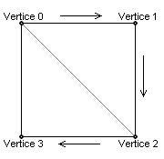

| dx_GFX_class: DRAW_VertexMap |
Función avanzada de DRAW_Map. Dibuja un grafico en pantalla con efectos definiendo la posición absoluta de los vértices.
Public Sub DRAW_VertexMap( Map As Long, VertexData() As Vertex, VertexSpecular As Long, Z As Long, AlphaBlendMode As Blit_Alpha, Mirror As Blit_Mirror, Filter As Blit_Filter)

Esta función puede resultar útil si implementaciones
externas a dx_lib32 necesitan dibujar gráficos en pantalla aplicando
transformaciones de forma continuada permitiendo evitar cálculos continuos en
cada llamada a la función implementado tablas de valores que almacenen los
cambios puntuales de dibujo, realizando estos cálculos de forma externa y solo
en el instante de aplicar las transformaciones. A su vez, esta función es la
única de las 4 versiones disponibles que permite dibujar un sprite posicionando
sus vértices en cualquier posición libre, pudiendo generar efectos de
deformaciones si se aplica en conjunto, por ejemplo ondulaciones submarinas o
efectos "lupa" en un mapa de tiles.
Proyecto dx_lib32 Descripción Clase dx_GFX_class Descripción dx_GFX_class Propiedades dx_GFX_class Metodos DRAW_Map DRAW_Pixel